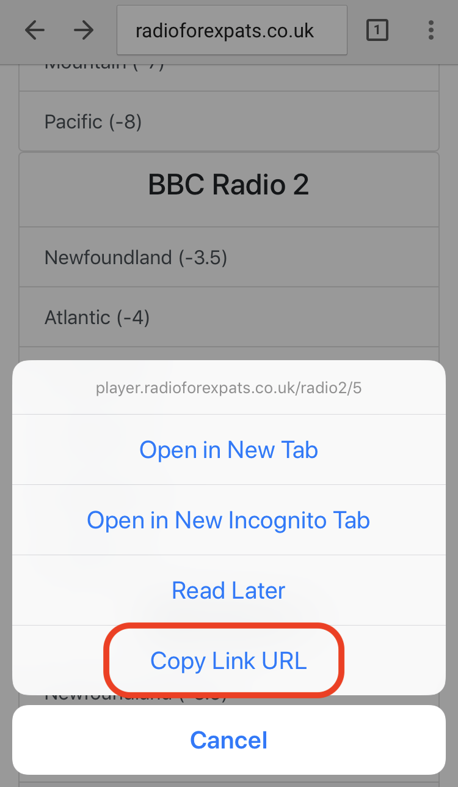
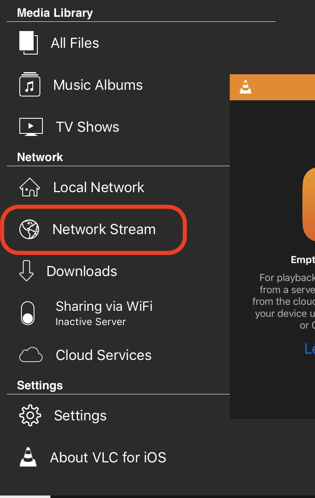
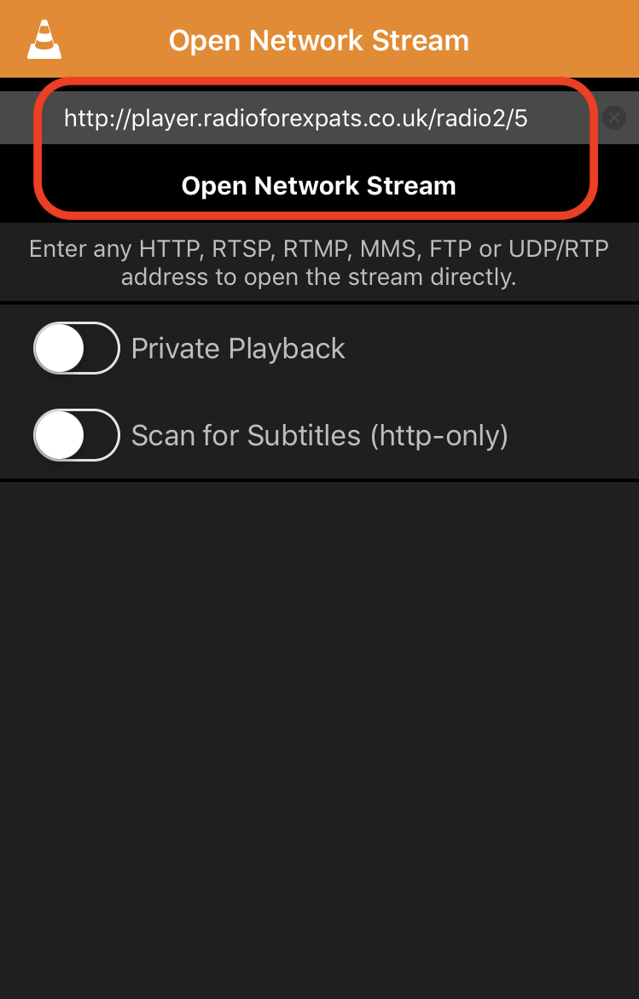

Adding streams to VLC
This guide depicts how to listen to a stream on mobile.
Step 1: Install VLC
Search for "VLC" in your phone's app store.
Step 2: Copy stream URL

Step 3: Paste into VLC
Open the "Network Stream" tab in VLC. Paste the stream URL in and click "Open Network Stream".
 